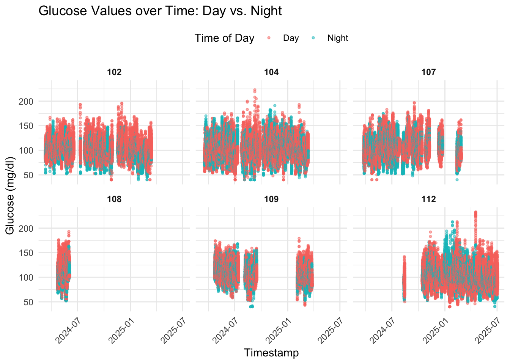

Description: Define directory and combine single data files into one dataset
# Define the directory containing the filesdata_directory <-"/Users/linabecker/Documents/M.Sc. Health Science/Masterarbeit/Masterarbeit/Datensätze"# List all CSV files in the directoryfile_list <-list.files(path = data_directory, pattern ="*.csv", full.names =TRUE)# Initialize an empty list to store individual data framesdata_list <-list()# Loop over each file to read, process, and add to data_listfor (file in file_list) {# Extract the ID from the filename id <-sub("_.*", "", basename(file))# Read the file, skipping the first row and using the second row as the header df <-read.csv(file, skip =1, header =TRUE)# Add the ID column df$ID <- id# Append the processed data frame to the list data_list[[length(data_list) +1]] <- df}# Combine all individual data frames into onecombined_data <-bind_rows(data_list)# View the combined data head(combined_data)
Device Serial.Number Device.Timestamp
1 FreeStyle Libre 3 445B278E-A42C-4AAD-9A7F-133BF591A6A7 11-03-2024 09:07
2 FreeStyle Libre 3 445B278E-A42C-4AAD-9A7F-133BF591A6A7 11-03-2024 09:12
3 FreeStyle Libre 3 445B278E-A42C-4AAD-9A7F-133BF591A6A7 11-03-2024 09:17
4 FreeStyle Libre 3 445B278E-A42C-4AAD-9A7F-133BF591A6A7 11-03-2024 09:22
5 FreeStyle Libre 3 445B278E-A42C-4AAD-9A7F-133BF591A6A7 11-03-2024 09:27
6 FreeStyle Libre 3 445B278E-A42C-4AAD-9A7F-133BF591A6A7 11-03-2024 09:32
Record.Type Historic.Glucose.mg.dL Scan.Glucose.mg.dL
1 0 94 NA
2 0 90 NA
3 0 90 NA
4 0 92 NA
5 0 97 NA
6 0 98 NA
Non.numeric.Rapid.Acting.Insulin Rapid.Acting.Insulin..units.
1 NA NA
2 NA NA
3 NA NA
4 NA NA
5 NA NA
6 NA NA
Non.numeric.Food Carbohydrates..grams. Carbohydrates..servings.
1 NA NA NA
2 NA NA NA
3 NA NA NA
4 NA NA NA
5 NA NA NA
6 NA NA NA
Non.numeric.Long.Acting.Insulin Long.Acting.Insulin.Value..units. Notes
1 NA NA
2 NA NA
3 NA NA
4 NA NA
5 NA NA
6 NA NA
Strip.Glucose.mg.dL Ketone.mmol.L Meal.Insulin..units.
1 NA NA NA
2 NA NA NA
3 NA NA NA
4 NA NA NA
5 NA NA NA
6 NA NA NA
Correction.Insulin..units. User.Change.Insulin..units. ID
1 NA NA 102Ecosleep
2 NA NA 102Ecosleep
3 NA NA 102Ecosleep
4 NA NA 102Ecosleep
5 NA NA 102Ecosleep
6 NA NA 102Ecosleep
# Get a summary of unique IDsid_summary <- combined_data %>%distinct(ID) %>%count()# Display the summaryid_summary
n
1 6
# Convert ID to a factorcombined_data <- combined_data %>%mutate(ID =as.factor(ID))# Rename the columnscombined_data <- combined_data %>%rename(DeviceTimestamp = Device.Timestamp,`Glucose levels (mg/dl)`= Historic.Glucose.mg.dL,`Scan glucose levels (mg/dl)`= Scan.Glucose.mg.dL )# View the updated column names (optional)colnames(combined_data)
# Convert the Timestamp column to POSIXct formatcombined_data$Timestamp <-as.POSIXct(combined_data$DeviceTimestamp, format ="%d-%m-%Y %H:%M")# Verify the structure to confirm the changestr(combined_data$Timestamp)
# Reorder columns, placing Timestamp as the fourth columncombined_data <- combined_data %>%select(1:3, Timestamp, everything())%>%arrange(Timestamp)#Check all values of Record Typessummary(combined_data$Record.Type)
Min. 1st Qu. Median Mean 3rd Qu. Max.
0.00 0.00 0.00 1.15 0.00 6.00
table(combined_data$Record.Type)
0 1 5 6
353202 8254 11 84030
# Process the data as specifiedcombined_data <- combined_data %>%# Remove rows where Record.Type is 5 or 6filter(!(Record.Type %in%c(5, 6))) %>%# Create a new column 'Glucose level'mutate("Glucose (mg/dl)"=if_else(!is.na(`Glucose levels (mg/dl)`), `Glucose levels (mg/dl)`, `Scan glucose levels (mg/dl)` ) )# View the first few rows to verifyhead(combined_data)
Device Serial.Number DeviceTimestamp
1 FreeStyle Libre 3 445B278E-A42C-4AAD-9A7F-133BF591A6A7 11-03-2024 09:07
2 FreeStyle Libre 3 445B278E-A42C-4AAD-9A7F-133BF591A6A7 11-03-2024 09:12
3 FreeStyle Libre 3 445B278E-A42C-4AAD-9A7F-133BF591A6A7 11-03-2024 09:17
4 FreeStyle Libre 3 445B278E-A42C-4AAD-9A7F-133BF591A6A7 11-03-2024 09:22
5 FreeStyle Libre 3 445B278E-A42C-4AAD-9A7F-133BF591A6A7 11-03-2024 09:27
6 FreeStyle Libre 3 445B278E-A42C-4AAD-9A7F-133BF591A6A7 11-03-2024 09:32
Timestamp Record.Type Glucose levels (mg/dl)
1 2024-03-11 09:07:00 0 94
2 2024-03-11 09:12:00 0 90
3 2024-03-11 09:17:00 0 90
4 2024-03-11 09:22:00 0 92
5 2024-03-11 09:27:00 0 97
6 2024-03-11 09:32:00 0 98
Scan glucose levels (mg/dl) Non.numeric.Rapid.Acting.Insulin
1 NA NA
2 NA NA
3 NA NA
4 NA NA
5 NA NA
6 NA NA
Rapid.Acting.Insulin..units. Non.numeric.Food Carbohydrates..grams.
1 NA NA NA
2 NA NA NA
3 NA NA NA
4 NA NA NA
5 NA NA NA
6 NA NA NA
Carbohydrates..servings. Non.numeric.Long.Acting.Insulin
1 NA NA
2 NA NA
3 NA NA
4 NA NA
5 NA NA
6 NA NA
Long.Acting.Insulin.Value..units. Notes Strip.Glucose.mg.dL Ketone.mmol.L
1 NA NA NA
2 NA NA NA
3 NA NA NA
4 NA NA NA
5 NA NA NA
6 NA NA NA
Meal.Insulin..units. Correction.Insulin..units. User.Change.Insulin..units.
1 NA NA NA
2 NA NA NA
3 NA NA NA
4 NA NA NA
5 NA NA NA
6 NA NA NA
ID Glucose (mg/dl)
1 102Ecosleep 94
2 102Ecosleep 90
3 102Ecosleep 90
4 102Ecosleep 92
5 102Ecosleep 97
6 102Ecosleep 98
Description: Get an overview of distribution of historic and scanned glucose data
# Filter out rows where both glucose values are missingglucose_data <- combined_data %>%filter(!is.na(`Glucose levels (mg/dl)`) |!is.na(`Scan glucose levels (mg/dl)`))# Plot all participants in one faceted plotggplot(glucose_data, aes(x = Timestamp)) +geom_point(aes(y =`Glucose levels (mg/dl)`), color ="blue", size =0.1, alpha =0.7) +geom_point(aes(y =`Scan glucose levels (mg/dl)`), color ="red", size =0.1, alpha =0.9) +facet_wrap(~ ID) +# One plot per IDlabs(title ="Glucose Measurements Over Time by Participant",subtitle ="Blue = Historic Glucose (5 min), Red = Scan Glucose (manual scan)",x ="Time",y ="Glucose Level (mg/dL)" ) +theme_minimal() +theme(axis.text.x =element_text(angle =45, hjust =1, size =6),strip.text =element_text(face ="bold", size =8),plot.title =element_text(size =14, face ="bold"),plot.subtitle =element_text(size =10) )
Warning: Removed 8266 rows containing missing values or values outside the scale range
(`geom_point()`).
Warning: Removed 353202 rows containing missing values or values outside the scale range
(`geom_point()`).
Data Cleaning
Description: filter out all columns not needed and filter out all glucose levels, which are not historic glucose levels (which are scan glucose levels)
# Filter out rows with NA or infinite values in Timestamp and Glucose levels columnscleaned_data <- combined_data %>%filter(!is.na(Timestamp), !is.na(`Glucose levels (mg/dl)`), is.finite(`Glucose levels (mg/dl)`))head(cleaned_data)
Device Serial.Number DeviceTimestamp
1 FreeStyle Libre 3 445B278E-A42C-4AAD-9A7F-133BF591A6A7 11-03-2024 09:07
2 FreeStyle Libre 3 445B278E-A42C-4AAD-9A7F-133BF591A6A7 11-03-2024 09:12
3 FreeStyle Libre 3 445B278E-A42C-4AAD-9A7F-133BF591A6A7 11-03-2024 09:17
4 FreeStyle Libre 3 445B278E-A42C-4AAD-9A7F-133BF591A6A7 11-03-2024 09:22
5 FreeStyle Libre 3 445B278E-A42C-4AAD-9A7F-133BF591A6A7 11-03-2024 09:27
6 FreeStyle Libre 3 445B278E-A42C-4AAD-9A7F-133BF591A6A7 11-03-2024 09:32
Timestamp Record.Type Glucose levels (mg/dl)
1 2024-03-11 09:07:00 0 94
2 2024-03-11 09:12:00 0 90
3 2024-03-11 09:17:00 0 90
4 2024-03-11 09:22:00 0 92
5 2024-03-11 09:27:00 0 97
6 2024-03-11 09:32:00 0 98
Scan glucose levels (mg/dl) Non.numeric.Rapid.Acting.Insulin
1 NA NA
2 NA NA
3 NA NA
4 NA NA
5 NA NA
6 NA NA
Rapid.Acting.Insulin..units. Non.numeric.Food Carbohydrates..grams.
1 NA NA NA
2 NA NA NA
3 NA NA NA
4 NA NA NA
5 NA NA NA
6 NA NA NA
Carbohydrates..servings. Non.numeric.Long.Acting.Insulin
1 NA NA
2 NA NA
3 NA NA
4 NA NA
5 NA NA
6 NA NA
Long.Acting.Insulin.Value..units. Notes Strip.Glucose.mg.dL Ketone.mmol.L
1 NA NA NA
2 NA NA NA
3 NA NA NA
4 NA NA NA
5 NA NA NA
6 NA NA NA
Meal.Insulin..units. Correction.Insulin..units. User.Change.Insulin..units.
1 NA NA NA
2 NA NA NA
3 NA NA NA
4 NA NA NA
5 NA NA NA
6 NA NA NA
ID Glucose (mg/dl)
1 102 94
2 102 90
3 102 90
4 102 92
5 102 97
6 102 98
Description: check if there are missings in glucose values
# Add a column to indicate missing or non-finite values in Glucose (1 = Missing/Non-finite, 0 = Present)cleaned_data <- cleaned_data %>%mutate(Missing =ifelse(is.na(`Glucose (mg/dl)`) |!is.finite(`Glucose (mg/dl)`), 1, 0) )# Check how many columns have the value 1 in Missingssum(cleaned_data$Missing ==1)
[1] 0
Description: Create a table showing an overview of expected number versus real number of measurements per ID per Month
# Step 1: Determine the start date for each ID (earliest timestamp)id_start_dates <- cleaned_data %>%group_by(ID) %>%summarise(Start_Date =min(Timestamp, na.rm =TRUE) , .groups ="drop")# Step 2: Join the start date back to the main data and filter to include only records from the start date onwardcleaned_data_filtered <- cleaned_data %>%left_join(id_start_dates, by ="ID") %>%filter(Timestamp >= Start_Date |is.na(Timestamp)) # Include rows where Timestamp is NA as well
Description: Table with overview
# Add Month and Yearglucose_monthly_summary <- cleaned_data %>%mutate(Month =floor_date(Timestamp, "month") ) %>%group_by(ID, Month) %>%summarise(Measured_Values =n(), # Measured ValuesDays_Observed =n_distinct(as.Date(Timestamp)), # Observed Days per MonthExpected_Values = Days_Observed *288, # Expected: 288 per DayMissing_Values = Expected_Values - Measured_Values,Missing_Percentage =round((Missing_Values / Expected_Values) *100, 2),.groups ="drop" )# Show Data Setglucose_monthly_summary
Description: per ID, check how many data points there are from the first day of measurement on for one year
# 102target_id_102 <-"102"start_date_102 <-as.Date("2024-03-11") # Filter for this ID and 1-year windowfiltered_data_102 <- cleaned_data_deduplicated %>%filter( ID == target_id_102, Timestamp >= start_date_102, Timestamp < start_date_102 +years(1) )# Count number of measurementsmeasurement_count_102 <-nrow(filtered_data_102)# 104target_id_104 <-"104"start_date_104 <-as.Date("2024-03-18") # Filter for this ID and 1-year windowfiltered_data_104 <- cleaned_data_deduplicated %>%filter( ID == target_id_104, Timestamp >= start_date_104, Timestamp < start_date_104 +years(1) )# Count number of measurementsmeasurement_count_104 <-nrow(filtered_data_104)# 107target_id_107 <-"107"start_date_107 <-as.Date("2024-03-25") # Filter for this ID and 1-year windowfiltered_data_107 <- cleaned_data_deduplicated %>%filter( ID == target_id_107, Timestamp >= start_date_107, Timestamp < start_date_107 +years(1) )# Count number of measurementsmeasurement_count_107 <-nrow(filtered_data_107)# 108target_id_108 <-"108"start_date_108 <-as.Date("2024-04-22") # Filter for this ID and 1-year windowfiltered_data_108 <- cleaned_data_deduplicated %>%filter( ID == target_id_108, Timestamp >= start_date_108, Timestamp < start_date_108 +years(1) )# Count number of measurementsmeasurement_count_108 <-nrow(filtered_data_108)# 109target_id_109 <-"109"start_date_109 <-as.Date("2024-04-22")# Filter for this ID and 1-year windowfiltered_data_109 <- cleaned_data_deduplicated %>%filter( ID == target_id_109, Timestamp >= start_date_109, Timestamp < start_date_109 +years(1) )# Count number of measurementsmeasurement_count_109 <-nrow(filtered_data_109)# 112target_id_112 <-"112"start_date_112 <-as.Date("2024-08-11") # Filter for this ID and 1-year windowfiltered_data_112 <- cleaned_data_deduplicated %>%filter( ID == target_id_112, Timestamp >= start_date_112, Timestamp < start_date_112 +years(1) )# Count number of measurementsmeasurement_count_112 <-nrow(filtered_data_112)
ggplot(cleaned_data_deduplicated, aes(x = Timestamp, y =`Glucose (mg/dl)`, color = Time_of_Day)) +geom_point(alpha =0.5, size =0.8) +facet_wrap(~ ID) +labs(color ="Time of Day", title ="Glucose Values over Time: Day vs. Night")+theme_minimal()+theme(legend.position ="top",strip.text =element_text(face ="bold"),axis.text.x =element_text(angle =45, hjust =1) )

ggplot(cleaned_data_deduplicated, aes(x = Time_of_Day, y =`Glucose (mg/dl)`, fill = Time_of_Day)) +geom_boxplot(alpha =0.5) +facet_wrap(~ ID) +theme_minimal() +labs(title ="Glucose Values: Day vs. Night",fill ="Time of Day" , x ="", y ="Glucose (mg/dl)")
ggplot(cleaned_data_deduplicated, aes(x = Timestamp, y =`Glucose (mg/dl)`, color = Time_of_Day)) +geom_point(alpha =0.3, size =1) +geom_smooth(method ="loess", se =FALSE) +facet_wrap(~ ID) +scale_color_manual(values =c("Day"="orange3", "Night"="midnightblue")) +labs(title ="Glucose trend over time: Day vs. Night",x ="Time",y ="Glucose (mg/dl)",color ="Time of Day" ) +theme_minimal() +theme(legend.position ="top",strip.text =element_text(face ="bold"),axis.text.x =element_text(angle =45, hjust =1) )
`geom_smooth()` using formula = 'y ~ x'
Description: Plot 3: Daily mean over time + standard deviation
# create dataset with mean and standard deviation cleaned_summary <- cleaned_data_deduplicated %>%mutate(Date =as.Date(Timestamp) # date of day ) %>%group_by(ID, Time_of_Day, Date) %>%summarise(mean_glucose =mean(`Glucose (mg/dl)`, na.rm =TRUE),sd_glucose =sd(`Glucose (mg/dl)`, na.rm =TRUE),.groups ="drop" )# Create Plotggplot(cleaned_summary, aes(x = Date, y = mean_glucose, color = Time_of_Day, fill = Time_of_Day)) +geom_smooth(size =0.5) +geom_ribbon(aes(ymin = mean_glucose - sd_glucose, ymax = mean_glucose + sd_glucose), alpha =0.2, color =NA) +facet_wrap(~ ID) +scale_color_manual(values =c("Day"="orange3", "Night"="midnightblue")) +scale_fill_manual(values =c("Day"="orange3", "Night"="midnightblue")) +labs(title ="Daily Mean Glucose with Standard Deviation (Day vs. Night)",x ="Date",y ="Mean Glucose (mg/dl)",color ="Time of Day",fill ="Time of Day" ) +theme_minimal() +theme(legend.position ="top",strip.text =element_text(face ="bold"),axis.text.x =element_text(angle =45, hjust =1) )
`geom_smooth()` using method = 'loess' and formula = 'y ~ x'
Nighttime Glucose: Hourly Bins
Description: Prepare Data for Graph
# Filter for night datanight_data <- cleaned_data_deduplicated %>%mutate(Hour =hour(Timestamp)) %>%filter(Hour >=22| Hour <7) %>%# Nighttime: 22 to 6# Create reordered factor for plotting (22 to 6)mutate(Hour_Factor =factor(Hour, levels =c(22, 23, 0, 1, 2, 3, 4, 5, 6)))# Calculate average glucose per hour per IDnight_avg <- night_data %>%group_by(ID, Hour_Factor) %>%summarise(Avg_Glucose =mean(`Glucose (mg/dl)`, na.rm =TRUE),.groups ="drop" )
Description: Plot the night
ggplot(night_avg, aes(x = Hour_Factor, y = Avg_Glucose, group = ID, color = ID)) +geom_line(size =1) +geom_point(size =1.5) +labs(title ="Nighttime Glucose Trends per ID",subtitle ="Hours from 22:00 to 06:00: hourly bins",x ="Hour of Night",y ="Average Glucose (mg/dl)",color ="ID" ) +theme_minimal() +theme(axis.text.x =element_text(angle =45, hjust =1),strip.text =element_text(face ="bold") )
Description: Boxplot of Average Glucose per Hour
#boxplotggplot(night_data, aes(x = Hour_Factor, y =`Glucose (mg/dl)`, fill = Hour_Factor)) +geom_boxplot(outlier.shape =NA, alpha =0.6) +facet_wrap(~ ID, ncol =2) +scale_fill_brewer(palette ="Blues") +labs(title ="Nighttime Glucose Distribution per Hour and ID",subtitle ="Hours from 22:00 to 06:00",x ="Hour of Night",y ="Glucose (mg/dl)",fill ="Hour" ) +theme_minimal() +theme(axis.text.x =element_text(angle =45, hjust =1),strip.text =element_text(face ="bold") )
Nighttime Glucose: 5min bins
# create 5min binsnight_data <- night_data %>%mutate(Minute5 =floor_date(Timestamp, unit ="5 minutes"),Minute5 =format(Minute5, "%H:%M"))# calculate mean and standard deviationnight_avg_5 <- night_data %>%group_by(ID, Minute5) %>%summarise(Avg_Glucose_5 =mean(`Glucose (mg/dl)`, na.rm =TRUE),Sd_Glucose_5 =sd(`Glucose (mg/dl)`, na.rm =TRUE),.groups ="drop" )# create levels for right orderlevels_ordered <-format(seq.POSIXt(from =as.POSIXct("2024-01-01 22:00"),to =as.POSIXct("2024-01-02 06:00"),by ="5 min"), "%H:%M")# create reordered factor for plottingnight_avg_5 <- night_avg_5 %>%mutate(Minute5_Factor =factor(Minute5, levels = levels_ordered))# cretae labels for x axishour_labels <-format(seq.POSIXt(from =as.POSIXct("2024-01-01 22:00"),to =as.POSIXct("2024-01-02 06:00"),by ="1 hour"), "%H:%M")# create one plot for allggplot(night_avg_5, aes(x = Minute5_Factor, y = Avg_Glucose_5, group = ID, color = ID, fill = ID)) +geom_smooth(size =0.8) +geom_line(size =0.5) +geom_ribbon(aes(ymin = Avg_Glucose_5 - Sd_Glucose_5, ymax = Avg_Glucose_5 + Sd_Glucose_5), alpha =0.1, color =NA)+scale_x_discrete(breaks = hour_labels) +labs(title ="Nighttime Glucose Trends per ID",subtitle ="Hours from 22:00 to 06:00: 5min bins",x ="Hour of Night",y ="Average Glucose (mg/dl)",color ="ID" ) +theme_minimal() +theme(axis.text.x =element_text(angle =45, hjust =1),strip.text =element_text(face ="bold") )
`geom_smooth()` using method = 'loess' and formula = 'y ~ x'
# create on eplot per IDggplot(night_avg_5, aes(x = Minute5_Factor, y = Avg_Glucose_5, group = ID, color = ID, fill = ID)) +geom_smooth(size =0.7) +geom_line(size =0.5) +geom_ribbon(aes(ymin = Avg_Glucose_5 - Sd_Glucose_5, ymax = Avg_Glucose_5 + Sd_Glucose_5), alpha =0.1, color =NA)+scale_x_discrete(breaks = hour_labels) +facet_wrap(~ ID) +labs(title ="Nighttime Glucose Trends per ID",subtitle ="Hours from 22:00 to 06:00: 5min bins",x ="Hour of Night",y ="Average Glucose (mg/dl)",color ="ID" ) +theme_minimal() +theme(axis.text.x =element_text(angle =45, hjust =1),strip.text =element_text(face ="bold") )
`geom_smooth()` using method = 'loess' and formula = 'y ~ x'
Create a double plot
# Extract time-of-day in hours and add ID names without "Ecosleep"double_data <- cleaned_data_deduplicated %>%mutate(Date =as.Date(Timestamp),Hour =hour(Timestamp),Minute =minute(Timestamp),Time_of_Day = Hour + Minute /60, )# Duplicate data: original time + shifted by 24hdouble_data_long <-bind_rows( double_data %>%mutate(Double_Hour = Time_of_Day), double_data %>%mutate(Double_Hour = Time_of_Day +24))# Round down to full hour and keep the original 0–47 factor for correct time orderingdouble_avg <- double_data_long %>%mutate(Hour_Rounded =floor(Double_Hour)) %>%group_by(ID, Hour_Rounded) %>%summarise(Avg_Glucose =mean(`Glucose (mg/dl)`, na.rm =TRUE), .groups ="drop") %>%mutate(Display_Hour = Hour_Rounded %%24,Day =ifelse(Hour_Rounded <24, "Day 1", "Day 2"),Hour_Label =paste0(Day, " – ", sprintf("%02d:00", Display_Hour)),Hour_Factor =factor(Hour_Label, levels =c(paste0("Day 1 – ", sprintf("%02d:00", 0:23)),paste0("Day 2 – ", sprintf("%02d:00", 0:23)) )) )# Create the plotggplot(double_avg, aes(x = Hour_Factor, y = Avg_Glucose, group = ID, color = ID)) +geom_line(size =1) +geom_point(size =1.5) +labs(title ="Double Plot: 48-Hour Glucose Trends per ID",subtitle ="Same 24h cycle shown twice to visualize rhythm",x ="Hour of Day (Repeated)",y ="Average Glucose (mg/dl)",color ="ID" ) +scale_y_continuous(limits =c(85, 120)) +scale_x_discrete(breaks =levels(double_avg$Hour_Factor)[seq(1, 48, by =4)] ) +theme_minimal() +theme(axis.text.x =element_text(angle =90, hjust =1, size =7),strip.text =element_text(face ="bold") )
Cosinus fit
First fit for every ID
# Filter data for ID 102fit_data_102 <- double_avg %>%filter(ID =="102")# Fit cosine model (period 24h)cos_fit_102 <-nls( Avg_Glucose ~ A *cos(2* pi /24* Hour_Rounded + phi) + C,data = fit_data_102,start =list(A =10, phi =0, C =100) # rough starting guesses)summary(cos_fit_102)
Formula: Avg_Glucose ~ A * cos(2 * pi/24 * Hour_Rounded + phi) + C
Parameters:
Estimate Std. Error t value Pr(>|t|)
A -6.37619 0.30189 -21.12 <2e-16 ***
phi -1.17838 0.04735 -24.89 <2e-16 ***
C 99.79182 0.21347 467.47 <2e-16 ***
---
Signif. codes: 0 '***' 0.001 '**' 0.01 '*' 0.05 '.' 0.1 ' ' 1
Residual standard error: 1.479 on 45 degrees of freedom
Number of iterations to convergence: 8
Achieved convergence tolerance: 7.629e-06
# Add predicted valuesfit_data_102 <- fit_data_102 %>%mutate(Fitted =predict(cos_fit_102))# Plot actual vs fittedggplot(fit_data_102, aes(x = Hour_Rounded)) +geom_point(aes(y = Avg_Glucose), color ="blue") +geom_line(aes(y = Fitted), color ="red") +labs(title ="Cosine Fit for 102",x ="Hour of Day (0–47)",y ="Average Glucose (mg/dl)" ) +theme_minimal()
fit_data_104 <- double_avg %>%filter(ID =="104")cos_fit_104 <-nls( Avg_Glucose ~ A *cos(2* pi /24* Hour_Rounded + phi) + C,data = fit_data_104,start =list(A =10, phi =0, C =100))fit_data_104 <- fit_data_104 %>%mutate(Fitted =predict(cos_fit_104))ggplot(fit_data_104, aes(x = Hour_Rounded)) +geom_point(aes(y = Avg_Glucose), color ="blue") +geom_line(aes(y = Fitted), color ="red") +labs(title ="Cosine Fit for 104",x ="Hour of Day (0–47)",y ="Average Glucose (mg/dl)" ) +theme_minimal()
fit_data_107 <- double_avg %>%filter(ID =="107")cos_fit_107 <-nls( Avg_Glucose ~ A *cos(2* pi /24* Hour_Rounded + phi) + C,data = fit_data_107,start =list(A =10, phi =0, C =100))fit_data_107 <- fit_data_107 %>%mutate(Fitted =predict(cos_fit_107))ggplot(fit_data_107, aes(x = Hour_Rounded)) +geom_point(aes(y = Avg_Glucose), color ="blue") +geom_line(aes(y = Fitted), color ="red") +labs(title ="Cosine Fit for 107",x ="Hour of Day (0–47)",y ="Average Glucose (mg/dl)" ) +theme_minimal()
fit_data_108 <- double_avg %>%filter(ID =="108")cos_fit_108 <-nls( Avg_Glucose ~ A *cos(2* pi /24* Hour_Rounded + phi) + C,data = fit_data_108,start =list(A =10, phi =0, C =100))fit_data_108 <- fit_data_108 %>%mutate(Fitted =predict(cos_fit_108))ggplot(fit_data_108, aes(x = Hour_Rounded)) +geom_point(aes(y = Avg_Glucose), color ="blue") +geom_line(aes(y = Fitted), color ="red") +labs(title ="Cosine Fit for 108",x ="Hour of Day (0–47)",y ="Average Glucose (mg/dl)" ) +theme_minimal()
fit_data_109 <- double_avg %>%filter(ID =="109")cos_fit_109 <-nls( Avg_Glucose ~ A *cos(2* pi /24* Hour_Rounded + phi) + C,data = fit_data_109,start =list(A =10, phi =0, C =100))fit_data_109 <- fit_data_109 %>%mutate(Fitted =predict(cos_fit_109))ggplot(fit_data_109, aes(x = Hour_Rounded)) +geom_point(aes(y = Avg_Glucose), color ="blue") +geom_line(aes(y = Fitted), color ="red") +labs(title ="Cosine Fit for 109",x ="Hour of Day (0–47)",y ="Average Glucose (mg/dl)" ) +theme_minimal()
fit_data_112 <- double_avg %>%filter(ID =="112")cos_fit_112 <-nls( Avg_Glucose ~ A *cos(2* pi /24* Hour_Rounded + phi) + C,data = fit_data_112,start =list(A =10, phi =0, C =100))fit_data_112 <- fit_data_112 %>%mutate(Fitted =predict(cos_fit_112))ggplot(fit_data_112, aes(x = Hour_Rounded)) +geom_point(aes(y = Avg_Glucose), color ="blue") +geom_line(aes(y = Fitted), color ="red") +labs(title ="Cosine Fit for 112",x ="Hour of Day (0–47)",y ="Average Glucose (mg/dl)" ) +theme_minimal()
# Maximum bestimmenmax_row <- fit_data_102 %>%filter(Fitted ==max(Fitted))cat("Maximum:\n")
# create dataset for cosinor model for 102Ecosleepglucose_fit_102_data <- cleaned_data_deduplicated %>%filter(ID =="102") %>%# filter for 102mutate(datetime =dmy_hm(DeviceTimestamp), # if format TT-MM-JJJJ HH:MMdec.time =hour(datetime) +minute(datetime) /60# time as decimal hour during the day )# cosinor modelglucose_fit_102 <-cosinor.lm(`Glucose (mg/dl)`~time(dec.time), data = glucose_fit_102_data, period =24) summary(glucose_fit_102)
Min. 1st Qu. Median Mean 3rd Qu. Max.
37.44 91.57 99.66 99.79 107.85 189.93
# plot the fitggplot_cosinor.lm(glucose_fit_102)
Description: fit cosinor for Ecosleep 104
# create dataset for cosinor model for 102Ecosleepglucose_fit_104_data <- cleaned_data_deduplicated %>%filter(ID =="104") %>%# filter for 104mutate(datetime =dmy_hm(DeviceTimestamp), # if format TT-MM-JJJJ HH:MMdec.time =hour(datetime) +minute(datetime) /60# time as decimal hour during the day )# cosinor modelglucose_fit_104 <-cosinor.lm(`Glucose (mg/dl)`~time(dec.time), data = glucose_fit_104_data, period =24) summary(glucose_fit_102)
Min. 1st Qu. Median Mean 3rd Qu. Max.
36.50 91.53 99.61 100.01 107.78 219.58
# plot the fitggplot_cosinor.lm(glucose_fit_104)
Description: fit cosinor for Ecosleep 107
# create dataset for cosinor model for 107Ecosleepglucose_fit_107_data <- cleaned_data_deduplicated %>%filter(ID =="107") %>%# filter for 107mutate(datetime =dmy_hm(DeviceTimestamp), # if format TT-MM-JJJJ HH:MMdec.time =hour(datetime) +minute(datetime) /60# time as decimal hour during the day )# cosinor modelglucose_fit_107 <-cosinor.lm(`Glucose (mg/dl)`~time(dec.time), data = glucose_fit_107_data, period =24) summary(glucose_fit_107)
Min. 1st Qu. Median Mean 3rd Qu. Max.
34.14 89.62 98.86 99.87 108.84 190.93
# plot the fitggplot_cosinor.lm(glucose_fit_107)
Description: fit cosinor for Ecosleep 108
# create dataset for cosinor model for 107Ecosleepglucose_fit_108_data <- cleaned_data_deduplicated %>%filter(ID =="108") %>%# filter for 107mutate(datetime =dmy_hm(DeviceTimestamp), # if format TT-MM-JJJJ HH:MMdec.time =hour(datetime) +minute(datetime) /60# time as decimal hour during the day )# cosinor modelglucose_fit_108 <-cosinor.lm(`Glucose (mg/dl)`~time(dec.time), data = glucose_fit_108_data, period =24) summary(glucose_fit_108)
Min. 1st Qu. Median Mean 3rd Qu. Max.
44.42 96.94 105.39 105.59 113.24 185.47
# plot the fitggplot_cosinor.lm(glucose_fit_108)
Description: fit cosinor for Ecosleep 109
# create dataset for cosinor model for 107Ecosleepglucose_fit_109_data <- cleaned_data_deduplicated %>%filter(ID =="109") %>%# filter for 109mutate(datetime =dmy_hm(DeviceTimestamp), # if format TT-MM-JJJJ HH:MMdec.time =hour(datetime) +minute(datetime) /60# time as decimal hour during the day )# cosinor modelglucose_fit_109 <-cosinor.lm(`Glucose (mg/dl)`~time(dec.time), data = glucose_fit_109_data, period =24) summary(glucose_fit_109)
Min. 1st Qu. Median Mean 3rd Qu. Max.
38.99 93.70 101.06 102.11 109.15 184.09
# plot the fitggplot_cosinor.lm(glucose_fit_109)
Description: fit cosinor for Ecosleep 112
# create dataset for cosinor model for 112Ecosleepglucose_fit_112_data <- cleaned_data_deduplicated %>%filter(ID =="112") %>%# filter for 112mutate(datetime =dmy_hm(DeviceTimestamp), # if format TT-MM-JJJJ HH:MMdec.time =hour(datetime) +minute(datetime) /60# time as decimal hour during the day )# cosinor modelglucose_fit_112 <-cosinor.lm(`Glucose (mg/dl)`~time(dec.time), data = glucose_fit_112_data, period =24) summary(glucose_fit_112)
# Add identifier columns and bind all together means_cos_fit <-bind_rows( amplitude_means_102 %>%mutate(ID ="102"), amplitude_means_104 %>%mutate(ID ="104"), amplitude_means_107 %>%mutate(ID ="107"), amplitude_means_108 %>%mutate(ID ="108"), amplitude_means_109 %>%mutate(ID ="109"), amplitude_means_112 %>%mutate(ID ="112") )
Acrophase: Linear Mixed Effects Model
Description: Install and Load Packages
library(lme4)
Loading required package: Matrix
Attaching package: 'Matrix'
The following objects are masked from 'package:tidyr':
expand, pack, unpack
library(lmerTest)
Attaching package: 'lmerTest'
The following object is masked from 'package:lme4':
lmer
The following object is masked from 'package:stats':
step
Description: Apply Linear Mixed Effects Model (NOT NEEDED)
# Model: Mean amplitude by Season with random intercept for ID model_acr <-lmer(mean_acr ~ Season + (1| ID), data = means_cos_fit)# Summary with fixed effect estimates and significancesummary(model_acr)
Linear mixed model fit by REML. t-tests use Satterthwaite's method [
lmerModLmerTest]
Formula: mean_acr ~ Season + (1 | ID)
Data: means_cos_fit
REML criterion at convergence: 96.1
Scaled residuals:
Min 1Q Median 3Q Max
-1.23779 -0.71510 -0.05516 0.56067 1.24019
Random effects:
Groups Name Variance Std.Dev.
ID (Intercept) 15.521 3.940
Residual 5.878 2.424
Number of obs: 21, groups: ID, 6
Fixed effects:
Estimate Std. Error df t value Pr(>|t|)
(Intercept) 14.272 1.976 7.574 7.223 0.000119 ***
SeasonSpring -1.251 1.516 11.984 -0.825 0.425359
SeasonSummer -2.475 1.533 11.488 -1.614 0.133638
SeasonWinter -2.084 1.533 11.488 -1.359 0.200120
---
Signif. codes: 0 '***' 0.001 '**' 0.01 '*' 0.05 '.' 0.1 ' ' 1
Correlation of Fixed Effects:
(Intr) SsnSpr SsnSmm
SeasonSprng -0.440
SeasonSummr -0.388 0.506
SeasonWintr -0.388 0.506 0.500
Description: Plot
ggplot(means_cos_fit, aes(x = Season, y = mean_acr)) +geom_boxplot(fill ="lightblue", alpha =0.6) +geom_jitter(width =0.2, alpha =0.5, color ="black") +theme_minimal() +labs(title ="Mean Acrophase by Season",x ="Season",y ="Mean Acrophase") +theme(plot.title =element_text(hjust =0.5))
Amplitude: Linear Mixed Effects Model (NOT NEEDED)
Description: Apply Linear Mixed Effects Model (NOT NEEDED)
# Model: Mean amplitude by Season with random intercept for ID model_amp <-lmer(mean_amp ~ Season + (1| ID), data = means_cos_fit)# Summary with fixed effect estimates and significancesummary(model_amp)
Linear mixed model fit by REML. t-tests use Satterthwaite's method [
lmerModLmerTest]
Formula: mean_amp ~ Season + (1 | ID)
Data: means_cos_fit
REML criterion at convergence: 61.6
Scaled residuals:
Min 1Q Median 3Q Max
-1.60264 -0.42728 0.05644 0.56862 1.54212
Random effects:
Groups Name Variance Std.Dev.
ID (Intercept) 7.9057 2.8117
Residual 0.4637 0.6809
Number of obs: 21, groups: ID, 6
Fixed effects:
Estimate Std. Error df t value Pr(>|t|)
(Intercept) 8.9038 1.1937 5.3983 7.459 0.000487 ***
SeasonSpring -0.5040 0.4297 11.9435 -1.173 0.263675
SeasonSummer -0.2443 0.4307 11.8337 -0.567 0.581098
SeasonWinter -0.3572 0.4307 11.8337 -0.830 0.423222
---
Signif. codes: 0 '***' 0.001 '**' 0.01 '*' 0.05 '.' 0.1 ' ' 1
Correlation of Fixed Effects:
(Intr) SsnSpr SsnSmm
SeasonSprng -0.209
SeasonSummr -0.180 0.501
SeasonWintr -0.180 0.501 0.500
Description: Plot (NOT NEEDED)
ggplot(means_cos_fit, aes(x = Season, y = mean_amp)) +geom_boxplot(fill ="lightblue", alpha =0.6) +geom_jitter(width =0.2, alpha =0.5, color ="black") +theme_minimal() +labs(title ="Mean Amplitude by Season",x ="Season",y ="Mean Amplitude") +theme(plot.title =element_text(hjust =0.5))
Intercept: Linear Mixed Effects Model
Description: Apply Linear Mixed Effects Model (NOT NEEDED)
# Model: Mean intercept by Season with random intercept for ID model_int <-lmer(mean_int ~ Season + (1| ID), data = means_cos_fit)# Summary with fixed effect estimates and significancesummary(model_int)
Linear mixed model fit by REML. t-tests use Satterthwaite's method [
lmerModLmerTest]
Formula: mean_int ~ Season + (1 | ID)
Data: means_cos_fit
REML criterion at convergence: 103.8
Scaled residuals:
Min 1Q Median 3Q Max
-2.3227 -0.3971 0.1578 0.4685 1.2757
Random effects:
Groups Name Variance Std.Dev.
ID (Intercept) 5.069 2.252
Residual 14.204 3.769
Number of obs: 21, groups: ID, 6
Fixed effects:
Estimate Std. Error df t value Pr(>|t|)
(Intercept) 102.330 1.952 14.580 52.424 <2e-16 ***
SeasonSpring -2.823 2.309 12.444 -1.223 0.2441
SeasonSummer -3.443 2.384 11.611 -1.444 0.1751
SeasonWinter -4.562 2.384 11.611 -1.914 0.0806 .
---
Signif. codes: 0 '***' 0.001 '**' 0.01 '*' 0.05 '.' 0.1 ' ' 1
Correlation of Fixed Effects:
(Intr) SsnSpr SsnSmm
SeasonSprng -0.658
SeasonSummr -0.611 0.516
SeasonWintr -0.611 0.516 0.500
Description: Plot (NOT NEEDED)
ggplot(means_cos_fit, aes(x = Season, y = mean_int)) +geom_boxplot(fill ="lightblue", alpha =0.6) +geom_jitter(width =0.2, alpha =0.5, color ="black") +theme_minimal() +labs(title ="Mean Intercept by Season",x ="Season",y ="Mean Intercept") +theme(plot.title =element_text(hjust =0.5))
Acrophase: Linear Mixed Effects Model
Description: Apply Linear Mixed Effects Model
# Setze Winter als Referenzlevelmoving_window_all_ids$Season <-relevel(factor(moving_window_all_ids$Season), ref ="Winter")
# Fit das Modell neumodel_acr_season <-lmer(Acrophase_Raw_Hours ~ Season + (1| ID), data = moving_window_all_ids)# Ausgabe der Ergebnissesummary(model_acr_season)
Linear mixed model fit by REML. t-tests use Satterthwaite's method [
lmerModLmerTest]
Formula: Acrophase_Raw_Hours ~ Season + (1 | ID)
Data: moving_window_all_ids
REML criterion at convergence: 7170.2
Scaled residuals:
Min 1Q Median 3Q Max
-4.6068 -0.1900 0.1173 0.5067 1.7005
Random effects:
Groups Name Variance Std.Dev.
ID (Intercept) 1.498 1.224
Residual 18.628 4.316
Number of obs: 1242, groups: ID, 6
Fixed effects:
Estimate Std. Error df t value Pr(>|t|)
(Intercept) 16.8381 0.5703 6.8333 29.525 1.84e-08 ***
SeasonAutumn 1.0152 0.3713 1234.4265 2.734 0.00635 **
SeasonSpring 1.4410 0.3346 1230.9628 4.306 1.79e-05 ***
SeasonSummer 0.4640 0.3659 1237.9278 1.268 0.20499
---
Signif. codes: 0 '***' 0.001 '**' 0.01 '*' 0.05 '.' 0.1 ' ' 1
Correlation of Fixed Effects:
(Intr) SsnAtm SsnSpr
SeasonAutmn -0.291
SeasonSprng -0.364 0.493
SeasonSummr -0.314 0.460 0.519
Warning: Removed 1 row containing missing values or values outside the scale range
(`geom_rect()`).
###Photoperiod Analysis
if (!requireNamespace("LightLogR", quietly =TRUE)) {install.packages("LightLogR")}
library(LightLogR)
Description: Add photoperiod to dataset
coords <-c(52.52, 13.405) # coords for Berlintz <-"Europe/Berlin"# Suppose your dataset is `moving_window_all_ids` with a POSIXct column "Window_Start"photoperiod_df <-photoperiod(coordinates = coords,dates =unique(as.Date(moving_window_all_ids$Window_Start)),tz = tz,solarDep =0# solarDep = 0 for true sunrise/sunset)# Join photoperiod info (dawn, dusk) back to main datasetmoving_window_all_ids <- moving_window_all_ids %>%mutate(date =as.Date(Window_Start)) %>%left_join(photoperiod_df, by =c("date"="date"))# Add photoperiod state (day/night) for each timestampmoving_window_all_ids <-add_photoperiod( moving_window_all_ids,coordinates = coords,Datetime.colname = Window_Start,solarDep =0,overwrite =TRUE)moving_window_all_ids <- moving_window_all_ids %>%mutate(photoperiod_hours =as.numeric(photoperiod, units ="hours"))